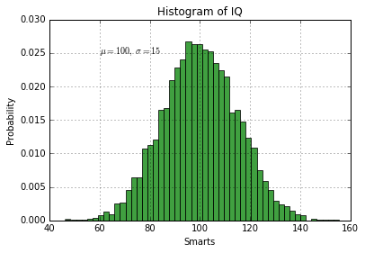
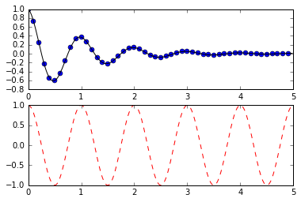
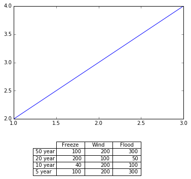

Matplotlib是一个使用Python实现的画图函数库。它可以以Python脚本，或者IPython Shell的形式被被使用。它是最著名的python绘图库，它提供了一整套和Matlab相似的命令API，十分适合交互式的进行制图。而且也可以方便的将它作为绘图控件，嵌入到GUI程序中去。它的文档相当完备，并且Gallery页面中有上百幅缩略图，打开之后都有源程序。因此如果你需要绘制某种类型的图，只需要在这个页面中浏览/复制/粘贴一下，基本上都能搞定。
Matplotlib官方网站：http://matplotlib.org/
Gallery页面地址：http://matplotlib.org/gallery.html
pyplot
pyplot是一个仿照MATLAB画图的接口设计的一个画图的库，接口的函数名称和使用规则都和MATLAB类似。
引入
1 | import matplotlib.pyplot as plt |
画线
plt.plot(x,y,commond)
x表示横坐标的取值，y表示纵坐标的取值，commond是可选的控制参数。如果只传递一个参数，例如plot(a), a被认为是纵坐标，横坐标为从0开始的自然数 0,1,2,3,…
还可以以两个或者三个参数为一组传递参数进入plot,这样可以一次画多条线段，plot(x1,y1,x2,y2,x3,y3)
commond的取值：
b- : 蓝色直线
ro : 红色圆点
r– : 红色虚线
bs : 蓝色实心方框
g^ : 绿色实心三角
1 | %matplotlib inline |

控制样式
- 设置横坐标和纵坐标的取值范围：plt.axis([xmin.xmax,ymin,ymax])
设置线宽：
plt.plot(x,y,linewidth = 2)
或者使用set方法：line, = plot(x,y,'-')line.set_antialiased(False)plt.setp(lines, color='r', linewidth=2.0)
要查看所有可以设置的属性，可以使用plt.setp(lines)设置坐标标识：
1 | plt.xlable('x轴说明',fontsize=14,color='red') |
每个设置都有更多的选项可以控制显示的各个方面，详细的属性信息参考Text properties and layout,关于图表上数学公式的书写，参考Text rendering With LaTeX
1 | import numpy as np |

同时画多个图
1 | plt.figure(1) #创建图对象，括号里面的数字是这个图的标识 |
1 | import numpy as np |

图例
1 | import matplotlib.patches as mpatches |
<matplotlib.legend.Legend at 0xb95ce10>
1 | import matplotlib.lines as mlines |
<matplotlib.legend.Legend at 0xc4013c8>

各种图
基本图表(plot)
1 | import matplotlib.pyplot as plt |

多个子图绘制在一起(subplot)
1 | """ |

直方图(hist)
- 下面这个程序展示了如何使用hist函数绘制直方图和如何绘制一条拟合直方图的曲线。
n, bins, patches = hist(x,num_bins)
x 构建直方图的数据，x = [n_samples,]
num_bins 要分成的组数，最后生成的直方图有num_bins个方框。
n 每个直方的值
bins 每个直方的起始位置
patches :Silent list of individual patches used to create the histogram or list of such list if multiple input datasets.
1 | """ |

饼状图(pie)
plt.pie(size,explode,labels,colors)
size: 绘制图的数据
explode: 分割出来显示的某个数据
lables:文字说明
colors: 饼状图对应部分的颜色
1 | import matplotlib.pyplot as plt |

表格
1 | plt.table(cellText=data,rowLabels=rows,colLabels=columns,loc='bottom',bbox=[0.25, -0.5, 0.5, 0.3]) |
cellText: 表格中的数据 [n_rows,n_colums]
rowLabels: 行标签
collabels: 列标签
loc: 相对于图表的位置，top,right,left,bottom
bbox: 边距
1 | """ |

极坐标下绘图
1 | ax = plt.subplot(211, projection='polar') |
projection=’polar’ 指定是极坐标
theta： 横坐标
r: 纵坐标
1 | """ |

颜色（Colormaps）
动画（animation）
import matplotlib.animation as animationanimation.FuncAnimation(fig1, update_line, num, fargs=(data, l), interval=200, blit=True,repeat=False)FuncAnimation是根据自定义函数生成动画的一个接口，fig1是画布，用plt.figure()生成uodate_line是更新图像的函数，一般返回的是一个2D或者3D的line对象，FuncAnimation会自动循环调用该函数设置图像显示的line,以达到动画的效果。num是传入update_line的第一个参数，该参数会从0开始每次递增1，直到结束。fargs可以传入额外的参数，这里我的update_line有三个参数，第一个是num,第二个和第三个就是靠指定fargs参数传入进去的，通过fargs传递的参数不会自动递增。interval指定调用update_line的间隔，就是动画间隔repeat设置动画播放完后是否重复
1 | import numpy as np |

配色
不同种类的颜色，渐变色等的搭配，可以从这里生成。
统计绘图(seaborn)
需要各种带有统计量的图形的时候，一种选择是自己计算各种统计量，然后使用Matplotlib手动绘制，另外一种方法就是使用专门用来绘制统计图形的工具，好处是不需要自己计算各种统计量，只需要传入原始的数据，工具包会自己计算需要的统计量。一个比较流行的统计绘图工具是seaborn.
箱线图
反应数据分布规律的一种图形，可以把数据的中位数，四分位数等都显示在一张图上。使用来观察数据分布的较好方法。图形类似下面这样。

seaborn自带的函数支持pandas.DataFrame格式的数据，所以使用起来非常方便。但是如果想要把两个DataFrame每一列的数据作为对比，制作成箱线图，seaborn并没有提供这样的方法，需要修改DataFrame的格式，使之符合要求。
1 | def plotBox(self,dflist,palette="Set3",rotation=45): |
矩阵可视化
把矩阵的值作为颜色的取值，可视化的表示出矩阵的情况。图形类似下面这样：

1 | import seaborn as sns |
牛逼的绘图
http://www.bugman123.com/index.html